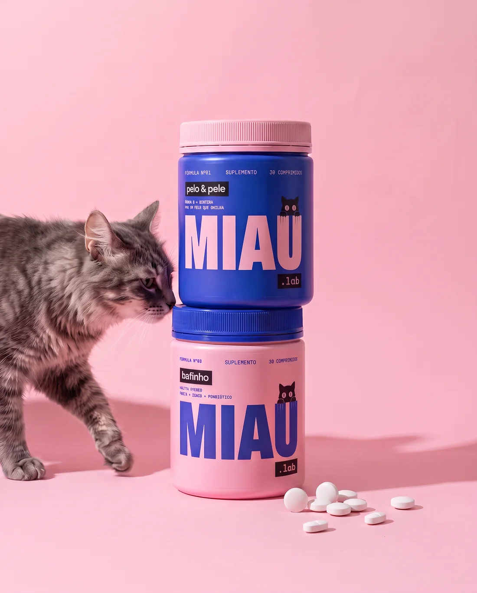
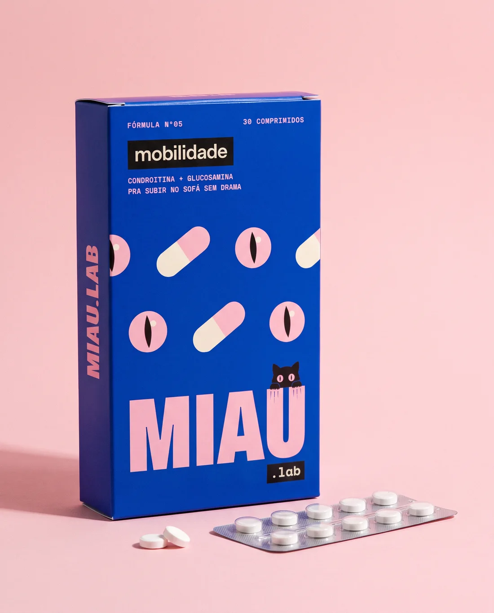
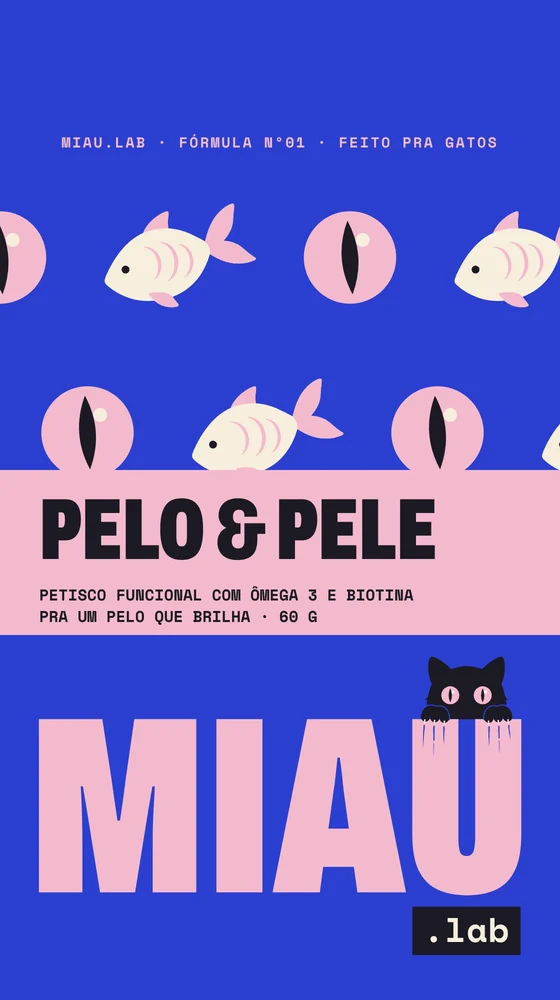
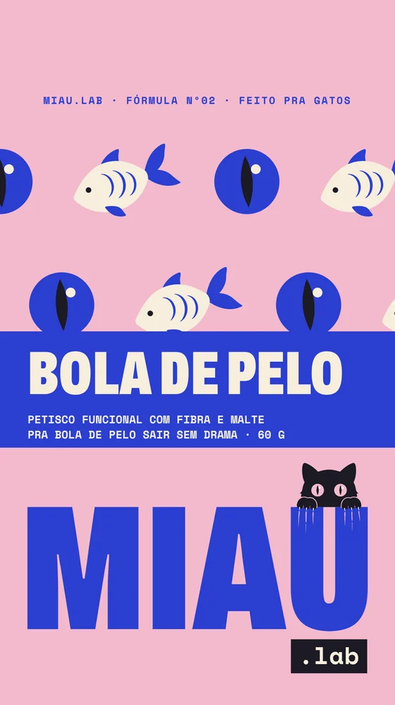
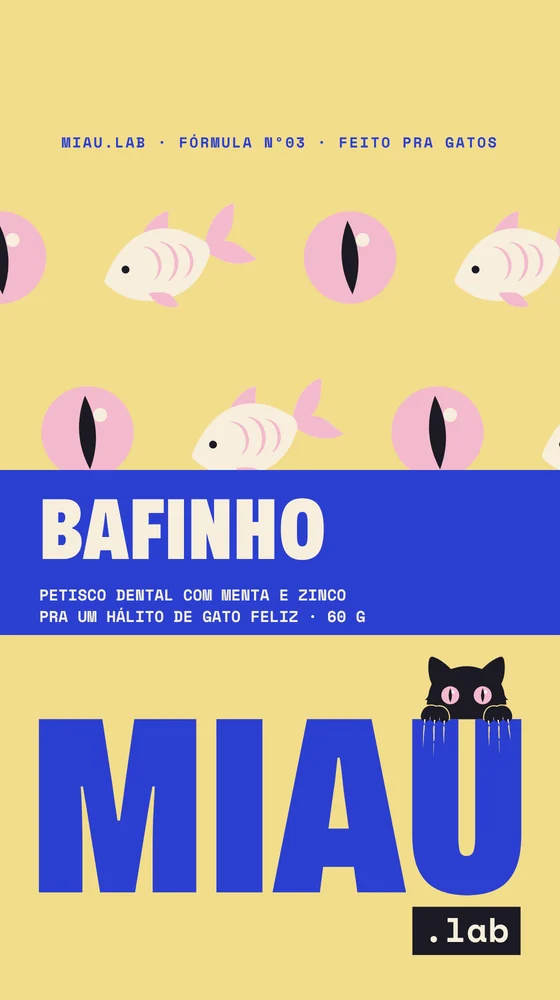
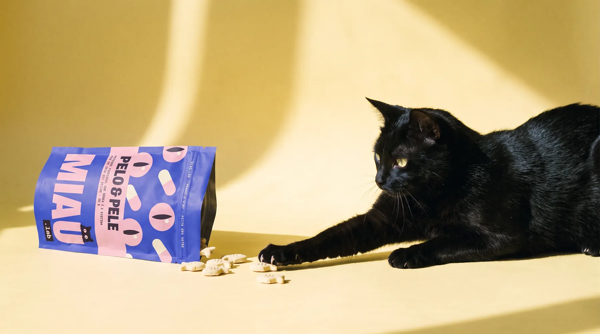

<title>MIAU.LAB</title>
<meta name="claude:viewport-fit-sides" content="cover">
<link rel="preconnect" href="https://fonts.googleapis.com"><link rel="preconnect" href="https://fonts.gstatic.com" crossorigin>
<link rel="stylesheet" href="https://fonts.googleapis.com/css2?family=Archivo:wdth,wght@62..125,100..900&family=Instrument+Sans:wght@400..700&family=Mea+Culpa&family=Space+Mono:wght@700&display=swap">
<style>
/* MIAU.LAB · site de apresentação. Tudo que é interação funciona com o dedo E com o mouse:
   1. Laboratório: escolhe o drama do gato, a foto abre num círculo a partir do botão e o fundo do site vira a cor da foto.
   2. A linha: toca no pouch e ele vira, mostrando a fórmula no verso.
   3. Olhos: um campo de olhos de gato (o padrão da marca) que segue o dedo/mouse e pisca em onda quando toca.
   4. Ciência que ronrona: esfrega o dedo (ou passa o mouse) no gato, o medidor de ronrom enche, o gato fecha os olhos e ronrona.
   5. Faixa que corre mais rápido e entorta conforme a velocidade da rolagem.
   Fotos sempre inteiras (sem recorte), fundo da página na cor do fundo da foto. Animação por linha, nunca letra por letra. */
:root {
  --cobalto: #2B3FD1; --rosa: #F4B9CD; --creme: #F6EEDC; --nanquim: #1C1A24; --manteiga: #F2DC8B;
  --f-pelo: #fcd794; --f-linha: #f6c4cc; --f-potes: #f4b2c2; --f-caixa: #f7c5c7;
  --display: 'Archivo', 'Arial Narrow', sans-serif; --texto: 'Instrument Sans', 'Helvetica Neue', Arial, sans-serif;
  --mono: 'Space Mono', ui-monospace, Menlo, monospace; --acento: 'Mea Culpa', 'Brush Script MT', cursive;
  --fundo: var(--f-pelo);
  color-scheme: light;
}
* { box-sizing: border-box; }
html { -webkit-tap-highlight-color: transparent; }
body { margin: 0; background: var(--fundo); color: var(--nanquim); font: 400 17px/1.55 var(--texto); -webkit-font-smoothing: antialiased; overflow-x: hidden; transition: background-color .7s ease; }
body::before { content: ""; position: fixed; inset: 0 0 auto; height: env(safe-area-inset-top, 0px); z-index: 60; background: var(--fundo); transition: background-color .7s ease; }
a { color: inherit; }
button { font: inherit; color: inherit; }
:focus-visible { outline: 3px solid var(--cobalto); outline-offset: 3px; border-radius: 8px; }
.lado { padding-left: max(16px, env(safe-area-inset-left, 0px)); padding-right: max(16px, env(safe-area-inset-right, 0px)); }
.rot { font: 700 12px/1.4 var(--mono); letter-spacing: .08em; text-transform: uppercase; }
.bt { display: inline-flex; align-items: center; gap: 10px; border-radius: 999px; padding: 14px 22px 13px; font: 600 15px/1 var(--texto); text-decoration: none; border: 0; cursor: pointer; background: var(--nanquim); color: var(--creme); transition: transform .25s; }
.bt:hover { transform: translateY(-2px); }
.bt.vazado { background: transparent; color: inherit; box-shadow: inset 0 0 0 2px currentColor; }
.tit { margin: 0; font: 900 clamp(58px, 8.4vw, 144px)/.86 var(--display); font-stretch: 62%; letter-spacing: -.005em; text-transform: uppercase; color: var(--cobalto); }
.tit .l, .lin { display: block; overflow: hidden; padding-top: .06em; margin-top: -.06em; }
.tit .l > span, .lin > span { display: block; }
.logo { position: absolute; left: 0; top: 0; width: 899px; height: 700px; transform-origin: 0 0; }
.dica { display: inline-flex; align-items: center; gap: 8px; }
.dica::before { content: ""; width: 8px; height: 8px; border-radius: 50%; background: currentColor; animation: pulsa 1.4s ease-in-out infinite; }
@keyframes pulsa { 50% { transform: scale(1.8); opacity: .35; } }

/* topo */
.topo { position: fixed; left: 0; right: 0; top: env(safe-area-inset-top, 0px); z-index: 50; height: 68px; display: flex; align-items: center; justify-content: space-between; gap: 16px;
  background: var(--fundo); color: var(--nanquim); transition: background-color .7s ease, color .4s, transform .45s cubic-bezier(.2,.8,.2,1); }
.topo.some { transform: translateY(calc(-100% - env(safe-area-inset-top, 0px))); }
:root[data-escuro] .topo { color: var(--rosa); }
:root[data-escuro] .topo .bt { background: var(--rosa); color: var(--nanquim); }
.marca { font: 900 28px/1 var(--display); font-stretch: 62%; text-decoration: none; color: inherit; background: none; border: 0; padding: 0; cursor: pointer; }
.marca small { font: 700 13px/1 var(--mono); }
.nav { display: flex; gap: 26px; align-items: center; font: 600 14px/1 var(--texto); }
.nav a { text-decoration: none; }
.nav .bt { padding: 11px 18px 10px; font-size: 13px; }
@media (max-width: 760px) { .nav a:not(.bt) { display: none; } }

/* 1 · hero */
.hero { position: relative; min-height: 100svh; display: grid; grid-template-columns: minmax(0, 1fr) minmax(0, 1fr); align-items: center; }
.hero .txt { position: relative; z-index: 2; display: grid; gap: 24px; padding-top: 90px; padding-bottom: 60px; }
.hero p { margin: 0; max-width: 34ch; font-size: 18px; }
.hero .acoes { display: flex; gap: 12px; flex-wrap: wrap; }
.hero .foto { position: absolute; right: 0; top: 0; bottom: 0; width: 52%; overflow: hidden;
  -webkit-mask-image: linear-gradient(to right, transparent 0, #000 16%); mask-image: linear-gradient(to right, transparent 0, #000 16%); }
.hero .fv { height: 100%; -webkit-mask-image: linear-gradient(to bottom, #000 80%, transparent); mask-image: linear-gradient(to bottom, #000 80%, transparent); }
.hero .foto img { width: 100%; height: 100%; object-fit: cover; object-position: 46% 30%; display: block; }
@media (max-width: 760px) {
  .hero { grid-template-columns: 1fr; align-items: start; }
  .hero .txt { padding-top: 96px; padding-bottom: 0; }
  .hero .foto { position: relative; width: 100%; height: 60svh; -webkit-mask-image: linear-gradient(to bottom, transparent 0, #000 14%); mask-image: linear-gradient(to bottom, transparent 0, #000 14%); }
}

/* faixa que corre */
.faixa { background: var(--nanquim); color: var(--rosa); overflow: hidden; padding-block: 18px 14px; }
.trilho { display: flex; width: max-content; will-change: transform; }
.trilho span { display: flex; align-items: center; gap: 28px; padding-right: 28px; font: 900 clamp(40px, 5vw, 72px)/1 var(--display); font-stretch: 62%; text-transform: uppercase; white-space: nowrap; }
.trilho svg { width: .62em; height: .62em; flex: none; }

/* 2 · laboratório */
.lab { position: relative; min-height: 100svh; display: grid; grid-template-columns: minmax(0, 1fr) minmax(0, 1fr); grid-template-rows: 1fr auto auto 1fr;
  grid-template-areas: ". fotos" "topo fotos" "painel fotos" ". fotos"; }
.topo-lab { grid-area: topo; position: relative; z-index: 2; display: grid; gap: 22px; padding-top: 100px; }
.lab h2.pergunta { margin: 0; font: 500 clamp(26px, 2.6vw, 38px)/1.1 var(--texto); letter-spacing: -.02em; max-width: 16ch; }
.chips { display: flex; gap: 10px; flex-wrap: wrap; }
.chip { position: relative; overflow: hidden; border: 0; border-radius: 999px; padding: 13px 20px 12px; font: 600 15px/1 var(--texto); cursor: pointer; background: #ffffff8c; color: var(--nanquim); transition: background-color .3s, color .3s, transform .2s; }
.chip:hover { transform: translateY(-2px); }
.chip[aria-selected="true"] { background: var(--nanquim); color: var(--creme); }
.chip .barra { position: absolute; left: 0; bottom: 0; height: 3px; width: 0; background: var(--rosa); }
.lab.auto .chip[aria-selected="true"] .barra { animation: enche 5s linear forwards; }
@keyframes enche { to { width: 100%; } }
.painel { grid-area: painel; position: relative; z-index: 2; display: grid; gap: 18px; align-content: start; margin-top: 44px; min-height: 410px; padding-bottom: 60px; }
.painel .tit { font-size: clamp(54px, 7.6vw, 130px); }
.painel .num { justify-self: start; font: 700 14px/1 var(--mono); letter-spacing: .06em; color: var(--creme); background: var(--nanquim); padding: 8px 12px 7px; border-radius: 999px; }
.painel p { margin: 0; max-width: 34ch; font-size: 18px; }
.ficha { display: flex; gap: 10px; flex-wrap: wrap; }
.ficha span { border-radius: 999px; padding: 8px 14px 7px; background: #ffffff70; }
.fotos { grid-area: fotos; position: relative; overflow: hidden; min-height: 100svh;
  -webkit-mask-image: linear-gradient(to right, transparent 0, #000 16%); mask-image: linear-gradient(to right, transparent 0, #000 16%); }
.lab figure { position: absolute; inset: 0; margin: 0; visibility: hidden; }
.lab figure.on { visibility: visible; }
.lab figure img { width: 100%; height: 100%; object-fit: cover; display: block; }
@media (max-width: 760px) {
  .lab { grid-template-columns: minmax(0, 1fr); grid-template-rows: auto; grid-template-areas: "topo" "fotos" "painel"; min-height: 0; }
  .topo-lab { padding-top: 64px; gap: 16px; }
  .fotos { min-height: 0; height: 54svh; margin-top: 4px; -webkit-mask-image: linear-gradient(to bottom, transparent 0, #000 12%, #000 86%, transparent); mask-image: linear-gradient(to bottom, transparent 0, #000 12%, #000 86%, transparent); }
  .painel { margin-top: 0; min-height: 360px; padding-bottom: 56px; }
  .chip { padding: 12px 16px 11px; font-size: 14px; }
}

/* 3 · a linha (pouch vira) */
.linha { background: var(--creme); padding-block: clamp(80px, 10vw, 140px); }
.linha .in { max-width: 1280px; margin: 0 auto; display: grid; gap: 40px; }
.linha .cab { display: flex; justify-content: space-between; align-items: end; gap: 20px; flex-wrap: wrap; }
.grade { display: grid; grid-template-columns: repeat(3, minmax(0, 1fr)); gap: 28px; }
.prod { display: grid; gap: 14px; justify-items: center; text-align: center; }
.inclina { width: min(100%, 300px); perspective: 1100px; transition: transform .4s cubic-bezier(.2,.8,.2,1); }
.vira { display: block; width: 100%; aspect-ratio: 560 / 1000; padding: 0; border: 0; background: none; cursor: pointer; perspective: 1100px; }
.cartao { display: block; position: relative; width: 100%; height: 100%; transform-style: preserve-3d; transition: transform .8s cubic-bezier(.3,1.4,.4,1); }
.vira[aria-pressed="true"] .cartao { transform: rotateY(180deg); }
.frente, .verso { display: block; position: absolute; inset: 0; border-radius: 22px 22px 16px 16px; -webkit-backface-visibility: hidden; backface-visibility: hidden; box-shadow: 0 40px 50px -30px #1c1a2466; overflow: hidden; }
.frente img { width: 100%; height: 100%; display: block; }
.frente::after { content: ""; position: absolute; inset: 0; background: linear-gradient(105deg, #ffffff40 0%, transparent 30%, transparent 64%, #1c1a2422 100%); }
.verso { transform: rotateY(180deg); display: grid !important; align-content: space-between; padding: 22px 20px; text-align: left; }
.verso .vt { font: 900 clamp(38px, 3.6vw, 52px)/.86 var(--display); font-stretch: 62%; text-transform: uppercase; }
.verso ul { margin: 0; padding: 0; list-style: none; display: grid; gap: 8px; font: 600 15px/1.3 var(--texto); }
.verso li { display: flex; gap: 8px; align-items: baseline; }
.verso li::before { content: ""; width: 8px; height: 8px; border-radius: 50%; background: currentColor; flex: none; transform: translateY(-1px); }
.verso small { font: 400 13px/1.4 var(--texto); }
.v-pelo { background: var(--cobalto); color: var(--rosa); }
.v-bola { background: var(--rosa); color: var(--cobalto); }
.v-bafinho { background: var(--manteiga); color: var(--cobalto); }
.prod h3 { margin: 0; font: 900 44px/.9 var(--display); font-stretch: 62%; text-transform: uppercase; color: var(--cobalto); }
.prod p { margin: 0; font-size: 15px; }
@media (max-width: 760px) {
  .grade { grid-template-columns: none; grid-auto-flow: column; grid-auto-columns: 74%; gap: 16px; overflow-x: auto; scroll-snap-type: x mandatory; scrollbar-width: none;
    margin-inline: calc(-1 * max(16px, env(safe-area-inset-left, 0px))); padding: 8px max(16px, env(safe-area-inset-left, 0px)) 16px; }
  .grade::-webkit-scrollbar { display: none; }
  .prod { scroll-snap-align: center; }
}

/* 4 · campo de olhos */
.olhos { position: relative; height: 100svh; min-height: 560px; background: var(--cobalto); color: var(--creme); overflow: hidden; touch-action: pan-y; }
.olhos canvas { position: absolute; inset: 0; width: 100%; height: 100%; display: block; }
.olhos .sobre { position: absolute; left: 0; right: 0; bottom: 0; z-index: 2; display: grid; gap: 14px; justify-items: start; padding-top: 90px; padding-bottom: clamp(28px, 5vw, 56px); pointer-events: none;
  background: linear-gradient(to bottom, #2b3fd100, #2b3fd1e6 55%); }
.olhos .sobre .tit { color: var(--creme); font-size: clamp(56px, 8vw, 130px); text-shadow: 0 0 40px #2b3fd1; }
.olhos .sobre .rot { background: var(--nanquim); color: var(--rosa); padding: 9px 14px 8px; border-radius: 999px; }

/* 5 · ciência que ronrona */
.manifesto { position: relative; background: var(--rosa); color: var(--cobalto); text-align: center; padding-block: clamp(80px, 10vw, 140px); overflow: hidden; }
.manifesto .a { font: 500 clamp(44px, 7vw, 110px)/1.05 var(--texto); letter-spacing: -.04em; }
.manifesto .b { font: 400 clamp(90px, 15vw, 230px)/.85 var(--acento); }
.manifesto .lin { padding-block: .08em; }
.manifesto .lin > span { display: inline-block; }
#gatoM { position: relative; width: min(84vw, 600px); margin: clamp(36px, 5vw, 64px) auto 0; aspect-ratio: 899 / 560; touch-action: pan-y; cursor: grab; }
.medidor { display: grid; justify-items: center; gap: 12px; margin-top: 26px; }
.medidor .trilha { width: min(320px, 80vw); height: 14px; border-radius: 999px; background: #ffffff80; overflow: hidden; }
.medidor .nivel { height: 100%; width: 100%; transform-origin: 0 50%; transform: scaleX(0); background: var(--cobalto); border-radius: 999px; }
#ronron { font: 400 clamp(36px, 4vw, 56px)/1.1 var(--acento); min-height: 1.2em; }
.coracao { position: absolute; z-index: 3; pointer-events: none; font: 400 28px/1 var(--texto); color: var(--cobalto); }

/* panorâmica + rodapé */
.pano { position: relative; height: clamp(320px, 56vw, 760px); overflow: hidden; margin: 0; }
.pano img { position: absolute; left: 0; top: -12%; width: 100%; height: 124%; object-fit: cover; object-position: 40% 50%; }
.rodape { background: var(--cobalto); color: var(--rosa); padding-block: clamp(60px, 8vw, 110px) 28px; }
.rodape .in { max-width: 1280px; margin: 0 auto; display: grid; gap: 40px; }
#logoR { position: relative; width: min(100%, 520px); margin: 0 auto; aspect-ratio: 899 / 640; }
.base { display: flex; justify-content: space-between; gap: 16px; flex-wrap: wrap; border-top: 2px solid var(--rosa); padding-top: 18px; }
@media (prefers-reduced-motion: reduce) { *, *::before, *::after { transition: none !important; animation: none !important; } }
</style>

<header class="topo lado">
  <button class="marca" id="marca" type="button" aria-label="MIAU.LAB: toca pra ouvir o miau e voltar ao início">MIAU<small>.lab</small></button>
  <nav class="nav" aria-label="Seções"><a href="#lab">Fórmulas</a><a href="#manifesto">Ciência</a><a class="bt" href="#linha">Ver a linha</a></nav>
</header>

<main>
  <section class="hero lado" id="inicio" data-fundo="--f-pelo">
    <div class="txt">
      <span class="rot">Nº01 · Pelo &amp; Pele · petisco funcional</span>
      <h1 class="tit"><span class="l"><span>Petisco</span></span><span class="l"><span>com</span></span><span class="l"><span>ciência.</span></span></h1>
      <p>Fórmula veterinária, feita pra gatos. Ômega 3 e biotina num petisco que o gato pede, pra um pelo que brilha no sol da janela.</p>
      <div class="acoes"><a class="bt" href="#lab">Qual é o drama do seu gato?</a><a class="bt vazado" href="#manifesto">Sobre a marca</a></div>
    </div>
    <div class="foto"><div class="fv"></div></div>
  </section>

  <div class="faixa" aria-hidden="true"><div class="trilho" id="trilho"></div></div>

  <section class="lab" id="lab" data-fundo="--f-linha" aria-labelledby="t-lab">
    <div class="topo-lab lado">
        <span class="rot">Laboratório MIAU.LAB</span>
        <h2 class="pergunta" id="t-lab">Qual é o drama do seu gato?</h2>
        <div class="chips" role="tablist" aria-label="Escolha o drama">
          <button class="chip" role="tab" aria-selected="true" aria-controls="painel" data-i="0">Bola de pelo<i class="barra"></i></button>
          <button class="chip" role="tab" aria-selected="false" aria-controls="painel" data-i="1">Bafinho<i class="barra"></i></button>
          <button class="chip" role="tab" aria-selected="false" aria-controls="painel" data-i="2">Sofá alto demais<i class="barra"></i></button>
        </div>
    </div>
    <div class="fotos" id="fotos" aria-hidden="true">
        <figure class="on"></figure>
        <figure></figure>
        <figure></figure>
      </div>
      <div class="painel lado" id="painel" role="tabpanel" aria-live="polite">
        <div class="num" id="pNum">Fórmula Nº02</div>
        <h3 class="tit" id="pTit"><span class="l"><span>Bola de pelo?</span></span><span class="l"><span>Sai.</span></span></h3>
        <p id="pTxt">Fibra e malte pra bola de pelo sair sem drama, e sem tapete estragado.</p>
        <div class="ficha rot" id="pFicha"><span>petisco funcional</span><span>60 g</span></div>
    </div>
  </section>

  <section class="linha lado" id="linha" aria-labelledby="t-linha" data-fundo="--creme">
    <div class="in">
      <div class="cab"><h2 class="tit" id="t-linha"><span class="l"><span>A linha.</span></span></h2><span class="rot dica">Toca no pouch pra ver a fórmula</span></div>
      <div class="grade">
        <article class="prod"><div class="inclina"><button class="vira" type="button" aria-pressed="false" aria-label="Virar o pouch Pelo & Pele"><span class="cartao">
          <span class="frente"></span>
          <span class="verso v-pelo"><span class="rot">MIAU.lab · Fórmula Nº01</span><span class="vt">Pelo &amp;<br>pele</span>
            <ul><li>Ômega 3</li><li>Biotina</li><li>Zinco</li></ul><small>Até 6 petiscos por dia, direto da mão. 60 g.</small></span></span></button></div>
          <span class="rot">Nº01 · petisco funcional</span><h3>Pelo &amp; pele</h3><p>Ômega 3 + biotina. 60 g.</p></article>
        <article class="prod"><div class="inclina"><button class="vira" type="button" aria-pressed="false" aria-label="Virar o pouch Bola de Pelo"><span class="cartao">
          <span class="frente"></span>
          <span class="verso v-bola"><span class="rot">MIAU.lab · Fórmula Nº02</span><span class="vt">Bola de<br>pelo</span>
            <ul><li>Fibra natural</li><li>Malte</li><li>Óleo de peixe</li></ul><small>Até 6 petiscos por dia, longe da hora da ração. 60 g.</small></span></span></button></div>
          <span class="rot">Nº02 · petisco funcional</span><h3>Bola de pelo</h3><p>Fibra + malte. 60 g.</p></article>
        <article class="prod"><div class="inclina"><button class="vira" type="button" aria-pressed="false" aria-label="Virar o pouch Bafinho"><span class="cartao">
          <span class="frente"></span>
          <span class="verso v-bafinho"><span class="rot">MIAU.lab · Fórmula Nº03</span><span class="vt">Bafinho</span>
            <ul><li>Menta</li><li>Zinco</li><li>Probiótico</li></ul><small>Até 6 petiscos por dia, depois da refeição. 60 g.</small></span></span></button></div>
          <span class="rot">Nº03 · petisco dental</span><h3>Bafinho</h3><p>Menta + zinco. 60 g.</p></article>
      </div>
    </div>
  </section>

  <section class="olhos" id="olhos" data-fundo="--cobalto" aria-labelledby="t-olhos">
    <canvas id="campo" aria-hidden="true"></canvas>
    <div class="sobre lado">
      <span class="rot dica" id="dicaOlhos">Mexe o mouse · toca pra piscar</span>
      <h2 class="tit" id="t-olhos"><span class="l"><span>Tá todo mundo</span></span><span class="l"><span>de olho.</span></span></h2>
    </div>
  </section>

  <section class="manifesto lado" id="manifesto" aria-labelledby="t-m" data-fundo="--rosa">
    <h2 id="t-m" style="margin:0;font-weight:inherit"><span class="lin a"><span>Ciência que</span></span><span class="lin b"><span>ronrona.</span></span></h2>
    <div id="gatoM" role="img" aria-label="Logo MIAU.lab: faça carinho no gato e ele ronrona"></div>
    <div class="medidor">
      <span class="rot dica" id="dicaGato">Passa o mouse no gato</span>
      <div class="trilha" role="progressbar" aria-label="Nível de ronrom" aria-valuemin="0" aria-valuemax="100" aria-valuenow="0" id="barraRon"><div class="nivel" id="nivel"></div></div>
      <div id="ronron" aria-live="polite"></div>
      <button class="bt" id="carinho" type="button">Fazer carinho no gato</button>
    </div>
  </section>

  <figure class="pano" data-fundo="--f-pelo"></figure>
</main>

<footer class="rodape lado" data-fundo="--cobalto">
  <div class="in">
    <div id="logoR" role="img" aria-label="Logo MIAU.lab"></div>
    <div class="base rot"><span>MIAU.LAB · marca conceitual</span><span>Identidade visual: EMS · @itsemsdesign</span><span>Feita pra gatos.</span></div>
  </div>
</footer>
<audio id="aRon" src="img/ronrom.mp3" preload="auto" loop></audio>
<audio id="aMiau" src="img/miau.mp3" preload="auto"></audio>

<script src="https://cdnjs.cloudflare.com/ajax/libs/gsap/3.12.5/gsap.min.js"></script>
<script src="https://cdnjs.cloudflare.com/ajax/libs/gsap/3.12.5/ScrollTrigger.min.js"></script>
<script src="js/gato.js"></script>
<script src="js/logo.js"></script>
<script>
(() => {
  const C = { cobalto: '#2B3FD1', rosa: '#F4B9CD', creme: '#F6EEDC', nanquim: '#1C1A24' };
  const $ = id => document.getElementById(id), reduz = matchMedia('(prefers-reduced-motion: reduce)').matches;
  const toque = matchMedia('(hover: none)').matches, temGsap = !!window.gsap;
  const raiz = document.documentElement, varCor = v => getComputedStyle(raiz).getPropertyValue(v).trim();
  const toca = (a, vol = 1) => { try { a.volume = vol; const p = a.play(); if (p) p.catch(() => {}); } catch (e) {} };
  if (toque) { $('dicaOlhos').textContent = 'Arrasta o dedo · toca pra piscar'; $('dicaGato').textContent = 'Esfrega o dedo de lado no gato'; }

  // ---------- fundo da página = cor do fundo da foto da seção do meio da tela ----------
  const fundo = v => { raiz.style.setProperty('--fundo', varCor(v)); if (v === '--cobalto') raiz.dataset.escuro = ''; else delete raiz.dataset.escuro; };
  let secMeio = null;
  const io = new IntersectionObserver(es => es.forEach(e => { if (e.isIntersecting) { secMeio = e.target; fundo(e.target.dataset.fundo); } }), { rootMargin: '-45% 0px -45% 0px' });
  document.querySelectorAll('[data-fundo]').forEach(el => io.observe(el));
  let yAnt = scrollY; const topo = document.querySelector('.topo');
  addEventListener('scroll', () => { const y = scrollY; if (Math.abs(y - yAnt) > 6) { topo.classList.toggle('some', y > yAnt && y > 120); yAnt = y; } }, { passive: true });
  $('marca').addEventListener('click', () => { toca($('aMiau'), .8); scrollTo({ top: 0, behavior: reduz ? 'auto' : 'smooth' }); });

  // ---------- ponteiro global (mouse e dedo) ----------
  let mx = innerWidth * .5, my = innerHeight * .4, ultimoToque = 0;
  const poe = (x, y) => { mx = x; my = y; ultimoToque = performance.now(); };
  addEventListener('pointermove', e => poe(e.clientX, e.clientY), { passive: true });
  addEventListener('pointerdown', e => poe(e.clientX, e.clientY), { passive: true });
  addEventListener('touchmove', e => { const t = e.touches[0]; if (t) poe(t.clientX, t.clientY); }, { passive: true });

  // ---------- faixa que corre (e entorta com a velocidade da rolagem) ----------
  const olhoSvg = '<svg viewBox="0 0 40 52"><ellipse cx="20" cy="26" rx="17" ry="24" fill="#F4B9CD"/><path d="M20 6c6 8 6 32 0 40-6-8-6-32 0-40z" fill="#1C1A24"/></svg>';
  const frase = ['Ciência que ronrona', 'Feita pra gatos', 'Petisco com ciência', 'Fórmula veterinária'].map(t => `${t}${olhoSvg}`).join('');
  $('trilho').innerHTML = `<span>${frase}</span><span>${frase}</span>`;

  // ---------- laboratório ----------
  const D = [
    { n: 'Fórmula Nº02', f: '--f-linha', tit: ['Bola de pelo?', 'Sai.'], txt: 'Fibra e malte pra bola de pelo sair sem drama, e sem tapete estragado.', ficha: ['petisco funcional', '60 g'] },
    { n: 'Fórmula Nº03', f: '--f-potes', tit: ['Bafinho,', 'tchau.'], txt: 'Menta, zinco e probiótico pro hálito de gato feliz. Ele cheira e aprova.', ficha: ['suplemento', '30 comprimidos'] },
    { n: 'Fórmula Nº05', f: '--f-caixa', tit: ['Sobe no sofá', 'sem drama.'], txt: 'Condroitina e glucosamina pras articulações de quem ainda manda na casa.', ficha: ['suplemento', '30 comprimidos'] },
  ];
  const lab = $('lab'), chips = [...lab.querySelectorAll('.chip')], figs = [...lab.querySelectorAll('figure')];
  let atual = 0, zTopo = 1, tlLab = null, autoTimer = null, labVisivel = false;
  const pTexto = i => { $('pNum').textContent = D[i].n; $('pTit').innerHTML = D[i].tit.map(t => `<span class="l"><span>${t}</span></span>`).join('');
    $('pTxt').textContent = D[i].txt; $('pFicha').innerHTML = D[i].ficha.map(t => `<span>${t}</span>`).join(''); };
  const partes = () => [$('pNum'), $('pTxt'), $('pFicha'), ...$('pTit').querySelectorAll('.l > span')];
  function escolhe(i, origem) {
    if (i === atual) return;
    if (tlLab) { tlLab.kill(); tlLab = null; gsap.killTweensOf(partes()); pTexto(atual); gsap.set(partes(), { clearProps: 'all' });
      figs.forEach((f, k) => { gsap.killTweensOf([f, f.querySelector('img')]); if (k === atual) gsap.set(f, { clipPath: 'none' }); else f.classList.remove('on'); }); }
    atual = i;
    chips.forEach((c, k) => c.setAttribute('aria-selected', k === i));
    lab.dataset.fundo = D[i].f; if (secMeio === lab) fundo(D[i].f);
    // a foto nova abre num círculo a partir do botão tocado
    const fr = $('fotos').getBoundingClientRect(); let ox = 0, oy = 50;
    if (origem) { const r = origem.getBoundingClientRect(); ox = Math.min(100, Math.max(0, (r.left + r.width / 2 - fr.left) / fr.width * 100)); oy = Math.min(100, Math.max(0, (r.top + r.height / 2 - fr.top) / fr.height * 100)); }
    const nova = figs[i], img = nova.querySelector('img'); nova.style.zIndex = ++zTopo; nova.classList.add('on');
    const fim = () => { figs.forEach((f, k) => { if (k !== i) f.classList.remove('on'); }); tlLab = null; };
    if (reduz || !temGsap) { pTexto(i); nova.style.clipPath = 'none'; fim(); return; }
    tlLab = gsap.timeline({ onComplete: fim });
    tlLab.fromTo(nova, { clipPath: `circle(0% at ${ox}% ${oy}%)` }, { clipPath: `circle(150% at ${ox}% ${oy}%)`, duration: 1, ease: 'power3.inOut' }, 0)
      .fromTo(img, { scale: 1.18 }, { scale: 1, duration: 1.3, ease: 'power3.out' }, 0)
      .to(partes(), { yPercent: -105, opacity: 0, duration: .3, ease: 'power2.in', stagger: .03 }, 0)
      .add(() => { pTexto(i); const novas = partes(); gsap.set(novas, { yPercent: 105, opacity: 0 });
        tlLab && tlLab.add(gsap.to(novas, { yPercent: 0, opacity: 1, duration: .7, ease: 'power4.out', stagger: .06 }), tlLab.time()); }, .36);
  }
  function proximo() { escolhe((atual + 1) % D.length, chips[(atual + 1) % D.length]); }
  function agendaAuto() { clearTimeout(autoTimer); if (!lab.classList.contains('auto') || !labVisivel || reduz) return; autoTimer = setTimeout(() => { proximo(); reiniciaBarra(); agendaAuto(); }, 5000); }
  function reiniciaBarra() { chips.forEach(c => { const b = c.querySelector('.barra'); b.style.animation = 'none'; b.offsetWidth; b.style.animation = ''; }); }
  chips.forEach((c, k) => c.addEventListener('click', () => { lab.classList.remove('auto'); clearTimeout(autoTimer); escolhe(k, c); }));
  lab.addEventListener('keydown', e => { if (!['ArrowRight', 'ArrowLeft'].includes(e.key)) return; const k = (atual + (e.key === 'ArrowRight' ? 1 : D.length - 1)) % D.length; chips[k].focus(); chips[k].click(); });
  lab.classList.add('auto');
  new IntersectionObserver(es => es.forEach(e => { labVisivel = e.isIntersecting; if (labVisivel) { reiniciaBarra(); agendaAuto(); } else clearTimeout(autoTimer); }), { threshold: .45 }).observe(lab);

  // ---------- a linha: pouch vira no toque; inclina com o mouse ----------
  document.querySelectorAll('.vira').forEach(b => b.addEventListener('click', () => b.setAttribute('aria-pressed', b.getAttribute('aria-pressed') !== 'true')));
  if (!toque) document.querySelectorAll('.inclina').forEach(w => { w.addEventListener('pointermove', e => { const r = w.getBoundingClientRect(), x = (e.clientX - r.left) / r.width - .5, y = (e.clientY - r.top) / r.height - .5;
    w.style.transform = `rotateY(${x * 16}deg) rotateX(${-y * 10}deg)`; }); w.addEventListener('pointerleave', () => w.style.transform = ''); });

  // ---------- campo de olhos (canvas) ----------
  (() => {
    const sec = $('olhos'), cv = $('campo'), cx = cv.getContext('2d');
    let W = 0, H = 0, dpr = 1, olhos = [], visivel = false, alvoX = 0, alvoY = 0, olhaX = 0, olhaY = 0, ondas = [];
    function monta() {
      dpr = Math.min(2, devicePixelRatio || 1); W = sec.clientWidth; H = sec.clientHeight; cv.width = W * dpr; cv.height = H * dpr;
      const cel = W < 600 ? 62 : 88, cols = Math.ceil(W / cel) + 1, lins = Math.ceil(H / (cel * .92)) + 1; olhos = [];
      for (let j = 0; j < lins; j++) for (let i = 0; i < cols; i++) {
        const x = i * cel + (j % 2 ? cel / 2 : 0), y = j * cel * .92 + cel * .4;
        olhos.push({ x, y, r: cel * .29 * (.86 + ((i * 7 + j * 13) % 5) * .05), inc: (((i * 5 + j * 3) % 7) - 3) * .05, pisca: -1, prox: 1500 + Math.random() * 9000 });
      }
    }
    function desenha(t) {
      if (!visivel) return requestAnimationFrame(desenha);
      const r = cv.getBoundingClientRect(), dentro = mx > r.left && mx < r.right && my > r.top && my < r.bottom && performance.now() - ultimoToque < 3500;
      if (dentro) { alvoX = mx - r.left; alvoY = my - r.top; } else { alvoX = W * (.5 + .38 * Math.sin(t / 1900)); alvoY = H * (.45 + .3 * Math.sin(t / 1300)); }
      olhaX += (alvoX - olhaX) * .12; olhaY += (alvoY - olhaY) * .12;
      cx.setTransform(dpr, 0, 0, dpr, 0, 0); cx.clearRect(0, 0, W, H);
      ondas = ondas.filter(o => t - o.t < 2500);
      for (const o of olhos) {
        // piscada espontânea + onda a partir do toque
        if (o.pisca < 0 && t > o.prox) { o.pisca = t; o.prox = t + 4000 + Math.random() * 9000; }
        let f = 0; if (o.pisca >= 0) { const u = (t - o.pisca) / 220; if (u >= 1) o.pisca = -1; else f = Math.sin(Math.PI * u); }
        for (const w of ondas) { const u = (t - w.t - Math.hypot(o.x - w.x, o.y - w.y) * 1.1) / 240; if (u > 0 && u < 1) f = Math.max(f, Math.sin(Math.PI * u)); }
        const dx = olhaX - o.x, dy = olhaY - o.y, d = Math.hypot(dx, dy) || 1, perto = Math.max(0, 1 - d / 260);
        const rx = o.r * .74, ry = o.r, px = dx / Math.max(d, 90) * rx * .42, py = dy / Math.max(d, 90) * ry * .3, pw = o.r * (.16 + .26 * perto);
        cx.save(); cx.translate(o.x, o.y); cx.rotate(o.inc); cx.scale(1, Math.max(.07, 1 - f));
        cx.beginPath(); cx.ellipse(0, 0, rx, ry, 0, 0, Math.PI * 2); cx.fillStyle = C.rosa; cx.fill(); cx.save(); cx.clip();
        cx.translate(px, py); cx.beginPath(); cx.moveTo(0, -ry * .86); cx.bezierCurveTo(pw * 1.3, -ry * .4, pw * 1.3, ry * .4, 0, ry * .86); cx.bezierCurveTo(-pw * 1.3, ry * .4, -pw * 1.3, -ry * .4, 0, -ry * .86);
        cx.fillStyle = C.nanquim; cx.fill(); cx.beginPath(); cx.arc(-pw * .2 - 2, -ry * .34, Math.max(2, o.r * .09), 0, Math.PI * 2); cx.fillStyle = C.creme; cx.fill();
        cx.restore(); cx.restore();
      }
      requestAnimationFrame(desenha);
    }
    sec.addEventListener('pointerdown', e => { const r = cv.getBoundingClientRect(); ondas.push({ x: e.clientX - r.left, y: e.clientY - r.top, t: performance.now() }); });
    monta(); olhaX = W / 2; olhaY = H / 2; new ResizeObserver(monta).observe(sec);
    new IntersectionObserver(es => es.forEach(e => visivel = e.isIntersecting)).observe(sec);
    requestAnimationFrame(desenha);
  })();

  // ---------- logos com o gato (olhos seguem o ponteiro, piscam, fecham de felicidade) ----------
  let feliz = 0, pisca = 0, prox = performance.now() + 2200;
  const logos = [];
  function poeLogo(caixa, o) {
    const d = document.createElement('div'); d.className = 'logo'; caixa.appendChild(d);
    miauLogoV3(d, Object.assign({ gato: C.nanquim, olho: C.rosa }, o));
    [...d.children].forEach(n => { if (n.textContent === '.lab') n.style.fontFamily = "'Space Mono', monospace"; });
    const ajusta = () => { const k = caixa.clientWidth / 899; d.style.transform = `translate(0, ${-130 * k}px) scale(${k})`; }; ajusta(); addEventListener('resize', ajusta);
    d.olhos = [...d.children[0].children[1].children].map(g => ({ g, t0: g.getAttribute('transform'), pup: [...g.children].slice(1) })); d.caixa = caixa; logos.push(d);
  }
  // carinho: distância esfregada em cima do gato enche o medidor; ele esvazia sozinho devagar
  let ron = 0, ultimo = null, tAnt = performance.now(), cheio = false;
  const gm = $('gatoM');
  let tentou = 0;
  const esfrega = (x, y) => { if (ultimo) ron = Math.min(1, ron + Math.hypot(x - ultimo[0], y - ultimo[1]) / (toque ? 700 : 1100)); ultimo = [x, y];
    const a = $('aRon'), t = performance.now(); if (ron > .12 && a.paused && t - tentou > 600) { tentou = t; toca(a, ron); } };
  gm.addEventListener('pointermove', e => esfrega(e.clientX, e.clientY));
  gm.addEventListener('pointerleave', () => ultimo = null);
  gm.addEventListener('pointercancel', () => ultimo = null);
  gm.addEventListener('pointerdown', e => { ultimo = [e.clientX, e.clientY]; });
  gm.addEventListener('pointerup', () => { if (ron > .05) toca($('aRon'), ron); });
  $('carinho').addEventListener('click', () => { ron = 1; toca($('aRon'), 1); });
  function coracao() { const r = gm.getBoundingClientRect(), m = $('manifesto').getBoundingClientRect(), s = document.createElement('span'); s.className = 'coracao'; s.textContent = '♥';
    s.style.left = (r.left - m.left + r.width * (.78 + Math.random() * .16)) + 'px'; s.style.top = (r.top - m.top + r.height * .05) + 'px'; $('manifesto').appendChild(s);
    if (temGsap) gsap.to(s, { y: -90 - Math.random() * 60, x: (Math.random() - .5) * 60, opacity: 0, rotate: (Math.random() - .5) * 40, duration: 1.6, ease: 'power2.out', onComplete: () => s.remove() }); else setTimeout(() => s.remove(), 600); }
  let tCor = 0;
  function quadro(t) {
    const dt = Math.min(.1, (t - tAnt) / 1000); tAnt = t;
    ron = Math.max(0, ron - dt * .09);
    const a = $('aRon'); if (ron > .05 && !a.paused) a.volume = Math.min(1, ron * 1.2); if (ron <= .03 && !a.paused) a.pause();
    $('nivel').style.transform = `scaleX(${ron})`; $('barraRon').setAttribute('aria-valuenow', Math.round(ron * 100));
    const txt = ron > .85 ? 'rrrrrrrrrr' : ron > .45 ? 'rrrr…' : ron > .12 ? 'tá gostando…' : '';
    if ($('ronron').textContent !== txt) $('ronron').textContent = txt;
    if (ron > .85 && t - tCor > 260 && !reduz) { coracao(); tCor = t; }
    feliz += (Math.min(1, Math.max(0, (ron - .25) / .5)) - feliz) * .12;
    if (!reduz && t > prox) { const u = (t - prox) / 170; pisca = u < 1 ? Math.sin(Math.PI * u) : 0; if (u >= 1) prox = t + 2600 + Math.random() * 2600; }
    logos.forEach(L => { const r = L.caixa.getBoundingClientRect(); if (r.bottom < 0 || r.top > innerHeight) return;
      const k = r.width / 899, ox = r.left + 798 * k, oy = r.top + 85 * k, dx = mx - ox, dy = my - oy, n = Math.max(Math.hypot(dx, dy), 200), f = Math.max(pisca, feliz * .85);
      L.olhos.forEach(({ g, t0, pup }) => { g.setAttribute('transform', `${t0} scale(1 ${Math.max(.06, 1 - f)})`); pup.forEach(e => e.setAttribute('transform', `translate(${dx / n * 12} ${dy / n * 7})`)); }); });
    requestAnimationFrame(quadro);
  }

  document.fonts.ready.then(() => {
    poeLogo(gm, { cor: C.cobalto, fundo: C.rosa, labFundo: C.nanquim, labCor: C.creme });
    poeLogo($('logoR'), { cor: C.rosa, fundo: C.cobalto, labFundo: C.creme, labCor: C.nanquim });
    requestAnimationFrame(quadro);
    if (reduz || !temGsap) return;
    gsap.registerPlugin(ScrollTrigger); ScrollTrigger.config({ ignoreMobileResize: true });
    // faixa: corre sempre, acelera e entorta com a rolagem
    const corre = gsap.to('#trilho', { xPercent: -50, duration: 26, ease: 'none', repeat: -1 });
    const entorta = gsap.quickTo('#trilho', 'skewX', { duration: .4, ease: 'power3' });
    let tRola = 0;
    ScrollTrigger.create({ onUpdate: s => { const v = s.getVelocity(); tRola = performance.now(); corre.timeScale(1 + Math.min(6, Math.abs(v) / 250)); entorta(Math.max(-12, Math.min(12, -v / 160))); } });
    gsap.ticker.add(() => { if (corre.timeScale() > 1) corre.timeScale(Math.max(1, corre.timeScale() * .94)); if (tRola && performance.now() - tRola > 140) { entorta(0); tRola = 0; } });
    // topo: título sobe por linha, foto assenta e segue o mouse de leve
    gsap.from('.hero .tit .l > span', { yPercent: 105, duration: 1, ease: 'power4.out', stagger: .09, delay: .1 });
    gsap.from('.hero .rot, .hero p, .hero .acoes', { y: 20, opacity: 0, duration: .8, ease: 'power3.out', stagger: .08, delay: .45 });
    gsap.from('#heroImg', { scale: 1.12, opacity: 0, duration: 1.4, ease: 'power3.out' });
    gsap.to('.hero .fv', { yPercent: 8, ease: 'none', scrollTrigger: { trigger: '.hero', start: 'top top', end: 'bottom top', scrub: true } });
    if (!toque) { const hx = gsap.quickTo('#heroImg', 'x', { duration: .9, ease: 'power3' }), hy = gsap.quickTo('#heroImg', 'y', { duration: .9, ease: 'power3' });
      addEventListener('pointermove', e => { hx((e.clientX / innerWidth - .5) * -26); hy((e.clientY / innerHeight - .5) * -18); }, { passive: true }); }
    // títulos entram por linha quando chegam na tela
    document.querySelectorAll('.lab, .linha, .olhos, .manifesto').forEach(sec => {
      gsap.from(sec.querySelectorAll('.l > span, .lin > span'), { yPercent: 105, duration: .9, ease: 'power4.out', stagger: .08, scrollTrigger: { trigger: sec, start: 'top 72%' } }); });
    gsap.from('.lab .rot, .lab .pergunta, .chip', { y: 18, opacity: 0, duration: .7, ease: 'power3.out', stagger: .06, scrollTrigger: { trigger: '.lab', start: 'top 70%' } });
    gsap.from('.prod', { y: 60, opacity: 0, duration: .9, ease: 'power3.out', stagger: .12, scrollTrigger: { trigger: '.grade', start: 'top 82%' } });
    // o primeiro pouch dá uma viradinha sozinho pra mostrar que vira
    ScrollTrigger.create({ trigger: '.grade', start: 'top 60%', once: true, onEnter: () => { const b = document.querySelector('.vira'); setTimeout(() => b.setAttribute('aria-pressed', 'true'), 900); setTimeout(() => b.setAttribute('aria-pressed', 'false'), 2600); } });
    gsap.from('#gatoM', { y: 80, opacity: 0, duration: 1, ease: 'power3.out', scrollTrigger: { trigger: '#gatoM', start: 'top 88%' } });
    gsap.to('.pano img', { yPercent: 10, ease: 'none', scrollTrigger: { trigger: '.pano', start: 'top bottom', end: 'bottom top', scrub: true } });
    Promise.all([...document.images].map(i => i.complete ? 0 : new Promise(r => { i.onload = i.onerror = r; }))).then(() => ScrollTrigger.refresh());
  });
})();
</script>
